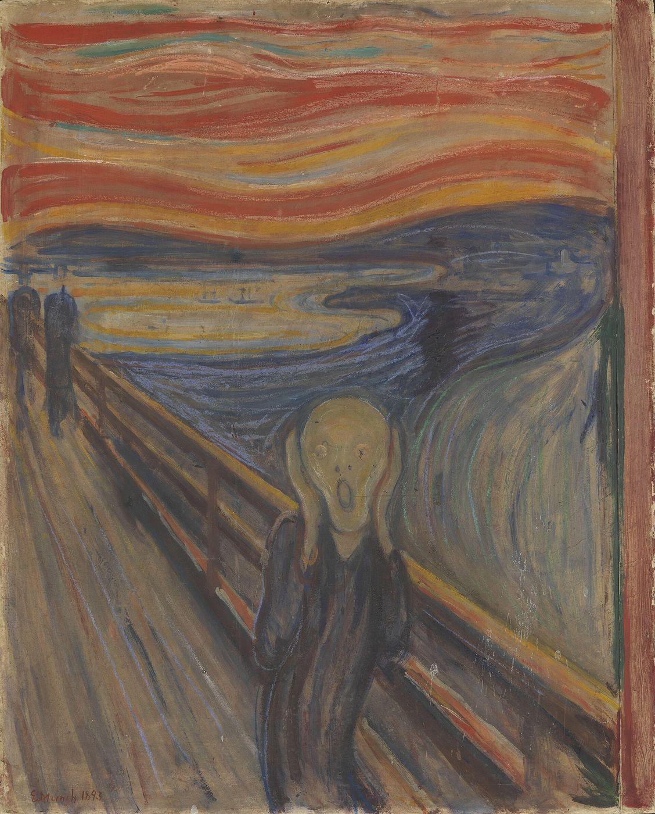
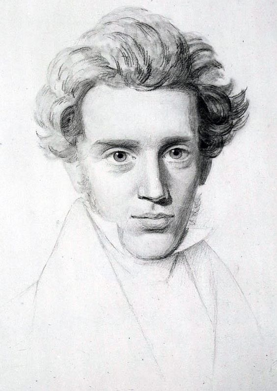

Cet essai a d’abord paru en turc. La version française est de ma main.


L’angoisse est le vertige de la liberté.
Søren Kierkegaard, Le Concept d’angoisse (1844)
L’angoisse n’est pas sans objet.
Jacques Lacan, Le Séminaire X
I
Dans une note écrite à Nice le 22 janvier 1892, Edvard Munch décrit l’expérience qui deviendra quelques années plus tard l’un des tableaux les plus célèbres du monde. Il marche sur une route avec deux amis ; le soleil se couche ; le ciel devient soudain rouge sang ; tandis que ses amis poursuivent leur chemin, il reste là, tremblant de peur, et sent un grand cri infini traverser la nature.1 La première impression de quiconque regarde le tableau est que la figure centrale crie. Or, dans le récit de Munch, la figure ne crie pas : elle entend le cri, et tente de se boucher les oreilles. C’est peut-être là l’image la plus juste de l’angoisse : un son dont on ne sait s’il vient du dedans ou du dehors, qui résonne dans le corps et en même temps dans le monde entier.
Les mots eux-mêmes portent la racine corporelle de cette expérience. L’allemand Angst, le danois angest, le français « angoisse » et l’anglais anxiety renvoient tous au latin angustia, l’étroitesse, le resserrement, et au verbe angere, serrer, étouffer ; le turc parle couramment de l’angoisse comme d’un « rétrécissement » ou d’un « serrement intérieur ».2 L’angoisse est d’abord un resserrement vécu dans la poitrine, la gorge, le souffle. La racine du mot turc pour l’angoisse, kaygı, regarde ailleurs : en vieux turc, il désignait le souci, le chagrin, la peine. Ce que nous nommons aujourd’hui d’un mot médical, « anxiété », est dans la mémoire des langues le nom à la fois d’une étroitesse et d’un chagrin. L’angoissé semble à la fois acculé et en deuil, par avance, de quelque chose.
Le premier penseur à placer l’angoisse au centre de la philosophie fut Søren Kierkegaard, qui écrivait à Copenhague un demi-siècle avant Munch. Il vécut lui-même, au long de sa courte vie, dans une mélancolie profonde et une inquiétude intérieure constante, et écrivit avoir rompu ses fiançailles avec Regine Olsen pour ne pas lui faire partager ses ténèbres. Dans Le Concept d’angoisse, publié en 1844 sous le pseudonyme de Vigilius Haufniensis, Kierkegaard compare l’angoisse au vertige de celui qui se tient au bord d’un abîme : la cause du vertige est l’œil qui regarde autant que l’abîme ; l’angoisse est le vertige que la liberté éprouve lorsqu’elle regarde vers le bas, dans ses propres possibles.3 Le trait le plus saisissant de cette définition est qu’elle rattache l’angoisse non à un manque ou à un danger, mais à une possibilité. On s’angoisse là où l’on découvre qu’on peut faire, être, choisir quelque chose.
Kierkegaard développe cette pensée par une lecture de l’histoire d’Adam qu’il place au centre du livre. Adam au paradis est innocent, et pour Kierkegaard l’innocence est ignorance : Adam ne peut distinguer le bien du mal, car il ne connaît pas encore la distinction elle-même. Lorsque Dieu lui interdit de manger le fruit de l’arbre de la connaissance, l’interdit éveille en Adam quelque chose qui n’existait pas auparavant : la possibilité de pouvoir. Adam ne sait pas ce que signifie l’interdit, ne sait pas ce qu’est la mort ; mais il pressent qu’il peut faire quelque chose, franchir une limite. L’angoisse est le nom de ce pressentiment, de ce que Kierkegaard appelle « la possibilité angoissante de pouvoir ».4 La psychanalyse connaît très bien cette scène où l’interdit éveille le désir. L’interdit n’empêche pas seulement une chose ; il la rend désirable, pensable, faisable. L’angoisse surgit au bord de la possibilité qu’ouvre l’interdit.

_-_(cropped).jpg){kind=link}
Dans Être et Temps (1927), Martin Heidegger fait de cette pensée une distinction entre la peur et l’angoisse. La peur a un objet déterminé, une menace qui s’approche dans le monde et qu’on peut nommer. Ce devant quoi l’angoisse se tient n’est rien de ce qui est dans le monde ; selon les mots de Heidegger, ce qui menace n’est nulle part, et à la question de savoir de quoi l’on s’angoisse, la réponse est « rien et nulle part ».5 C’est aussi le trait le plus familier de notre expérience quotidienne de l’angoisse : on ne peut dire de quoi l’on s’angoisse, on sent seulement que quelque chose approche. Ce que la psychanalyse apporte à cette question philosophique séculaire, c’est l’idée que ce « rien » pourrait bien être quelque chose, mais situé en un lieu que la pensée consciente ne peut atteindre.
Seize ans après Heidegger, dans L’Être et le Néant (1943), Jean-Paul Sartre revient à l’image kierkegaardienne de l’abîme et la pousse un pas plus loin. Il nous demande d’imaginer quelqu’un qui marche sur un étroit sentier de montagne, sans garde-fou. Le vertige que ressent cette personne, dit Sartre, ne vient pas de la peur de tomber, mais de ce qu’elle sait pouvoir se jeter dans le vide : « Le vertige est angoisse dans la mesure où je redoute non de tomber dans le précipice, mais de m’y jeter. »6 La peur se tourne vers un danger extérieur, une pierre qui roule, un sol glissant ; l’angoisse vers sa propre liberté, vers la possibilité d’une décision que rien ne peut empêcher. Cette phrase est la description philosophique d’une peur souvent entendue en clinique : la pensée « et si je le faisais » qui surgit soudain devant une fenêtre, au bord d’un quai de gare, un couteau à la main. Cette pensée n’est le plus souvent pas un désir ; c’est le vertige de la rencontre avec la liberté, avec la possibilité, avec la limite elle-même.
II
Freud a théorisé l’angoisse deux fois, de deux manières très différentes. Dans sa première théorie, dans des écrits du milieu des années 1890, il pense l’angoisse comme la forme transformée d’une tension sexuelle qui ne trouve pas de décharge : la libido refoulée ou insatisfaite se change en angoisse.7 Le matériau clinique le plus riche de cette première théorie est le cas publié en 1909 et entré dans l’histoire de la psychanalyse sous le nom du « petit Hans ».
L’article de Freud de 1895 contient aussi l’une des premières descriptions détaillées de ce que nous appelons aujourd’hui une attaque de panique. Dans le tableau qu’il nomme « névrose d’angoisse », Freud décrit des accès d’angoisse qui surviennent brusquement, liés à aucune représentation : palpitations, essoufflement, sueurs, tremblements, vertiges, peur de mourir ou de devenir fou. La description recoupe étonnamment le tableau que les manuels diagnostiques de la psychiatrie rangeront un siècle plus tard sous le nom de trouble panique. Vingt-quatre ans avant Freud, en 1871, le psychiatre berlinois Carl Westphal avait décrit des patients saisis d’une angoisse intense lorsqu’ils tentaient de traverser des espaces ouverts, des places vides ou des rues bondées, et avait donné à ce tableau un nom tiré du grec agora, la place publique : l’agoraphobie.8 Les patients de Westphal avaient un point commun : ils ne pouvaient traverser la place seuls, mais le pouvaient au bras de quelqu’un. Ce qui apaisait l’angoisse n’était pas une place plus petite, mais la présence d’un autre.
Hans, cinq ans, s’est mis à avoir peur des chevaux dans les rues de Vienne. Cette peur s’organise autour de détails précis : les chevaux qui tirent de lourdes voitures chargées, et surtout un cheval qui tombe dans la rue en agitant les jambes. Freud ne voit l’enfant qu’une seule fois ; l’analyse est conduite, sous sa supervision, par le père du garçon, qui lui envoie des notes détaillées.9 La leçon durable du cas est que la phobie est une protection contre l’angoisse. Il y a en Hans une angoisse innommable qui s’étend partout ; la phobie la circonscrit en la liant à un seul objet, les chevaux. Tant qu’on évite les chevaux, le monde reste vivable. C’est pourquoi tenter de supprimer de force une phobie sans comprendre ce qu’elle lie peut revenir à libérer l’angoisse qu’elle tenait et à la répandre de nouveau partout, dans toutes les rues, à toutes les heures. La phobie est une souffrance, mais aussi une solution : une solution qui dresse la carte de l’angoisse, lui donne un lieu et une limite.
Freud a décrit le rapport entre l’angoisse et la parole peut-être de la plus belle façon dans une petite note ajoutée aux Trois essais sur la théorie sexuelle de 1905. Un garçon de trois ans, couché dans une chambre obscure, appelle sa tante dans la pièce voisine et lui demande de lui parler, car il a peur du noir. Quand sa tante lui demande à quoi cela servirait, puisqu’il ne peut de toute façon pas la voir, l’enfant répond : quand quelqu’un parle, il fait clair.10 Freud en conclut que la peur du noir des enfants exprime en réalité le manque de la personne aimée. Mais la phrase elle-même résume toute la méthode de la psychanalyse. Ce qui éclaire l’obscurité n’est pas une lumière, mais une voix : la voix d’un autre, qui fait savoir qu’il est là, qu’il écoute, qu’il parle. L’angoisse ne disparaît pas quand elle est mise en mots ; mais l’obscurité devient une obscurité où quelqu’un parle.
En 1926, dans Inhibition, symptôme et angoisse, Freud transforme radicalement sa première théorie. L’angoisse n’est plus la conséquence du refoulement, mais sa cause. Devant un désir qui monte de l’intérieur et qui est perçu comme dangereux, le moi produit une angoisse signal ; ce signal annonce qu’un danger approche et met en branle les mécanismes de défense. Freud ordonne ces dangers en une série qui se succède au fil de la vie humaine : la détresse de la naissance, la perte de la mère et de ses soins, la perte de l’amour, la menace de castration et enfin la punition du surmoi. Chacun est l’écho d’une situation de détresse que le sujet a réellement vécue ou pourrait vivre.11 Dans cette nouvelle théorie, l’angoisse est une alarme qui annonce que le refoulé est sur le point de faire retour.
Il ne faut pas oublier que Freud opéra ce changement en partie en réponse à un débat. Son proche collaborateur Otto Rank avait soutenu, dans Le Traumatisme de la naissance (1924), que la naissance est la source première et fondamentale de toute angoisse, que l’être humain revit toute sa vie le choc de la séparation d’avec le ventre maternel, et que les névroses sont des répétitions de ce premier traumatisme. Freud accueillit d’abord le livre avec intérêt, puis s’en éloigna de plus en plus ; sa relation avec Rank se rompit à la suite de ce débat.12 Dans le livre de 1926, Freud admet la naissance comme le premier exemple de l’angoisse, une sorte d’esquisse de toutes les expériences ultérieures ; mais il ne réduit pas l’angoisse à la répétition d’un traumatisme unique. La source de l’angoisse est moins un événement en lui-même que la structure de toute situation où le sujet se trouve en détresse. Dans les mêmes années, Freud avait aussi distingué trois mots allemands : la peur, Furcht, qui a un objet déterminé ; l’effroi, Schreck, que produit un danger qui prend au dépourvu ; et l’angoisse, Angst, comme état d’attente d’un danger et de préparation à celui-ci.13 Dans cette distinction, l’angoisse est moins une faiblesse qu’une protection : une attente qui fait barrage à l’effroi, à la terreur sans aucune préparation.
III
Dans son dixième séminaire, entièrement consacré à l’angoisse en 1962–1963, Lacan porte l’héritage freudien dans une direction nouvelle et énonce, dès les premières leçons, la formule qui s’oppose à l’angoisse « sans objet » de Heidegger et de Freud : l’angoisse n’est pas sans objet.14 L’angoisse a un objet ; seulement, cet objet n’est pas une chose qu’on puisse trouver et nommer dans le monde, comme l’objet de la peur. Pour Lacan, l’objet de l’angoisse est l’objet cause du désir, qu’il nomme objet petit a.
Une autre thèse provocante du séminaire est que l’angoisse naît non du manque de quelque chose, mais du manque du manque. Pour que le désir existe, il faut un vide, un manque. Lorsque ce vide se comble, lorsque l’autre nous enveloppe de trop près, occupe tout notre espace de sa demande, ou lorsque ce qu’il veut de nous devient insaisissable, l’angoisse monte. Lacan concrétise cette situation par un petit apologue raconté au début du séminaire, devenu l’une des images les plus citées de la littérature psychanalytique. Imaginez-vous revêtu d’un masque, mais sans pouvoir voir quel masque vous portez, face à une mante religieuse géante. On sait que la mante femelle peut dévorer le mâle après l’accouplement. Ce qui angoisse vraiment, ce n’est pas la puissance de l’autre, mais l’impossibilité de savoir pour quoi elle vous prend, quel objet vous êtes dans le reflet de ses yeux.
Dans le même séminaire, Lacan renverse aussi une supposition courante sur la source de l’angoisse. Une large part de la psychologie du développement et de la psychanalyse rattachait l’angoisse de l’enfant à l’absence de la mère : quand la mère s’en va, l’enfant s’angoisse. Quelques années avant le séminaire de Lacan, dans un article de 1960 intitulé « Separation Anxiety », le psychanalyste anglais John Bowlby avait décrit les réactions de l’enfant à la séparation d’avec la mère comme des phases de protestation, de désespoir et de détachement, et placé ces observations au fondement de ce qu’on appellera plus tard la théorie de l’attachement ; l’expérience de la « situation étrange », mise au point par Mary Ainsworth dans les années 1970, mesurait les réactions du nourrisson au bref départ et au retour de sa mère.15 Lacan dit exactement l’inverse : ce qui angoisse le plus l’enfant, ce n’est pas l’absence de la mère, c’est qu’elle ne s’en aille jamais, qu’elle soit toujours là, toujours sur son dos. Les allées et venues de la mère, la possibilité de l’absence, sont la garantie de la présence ; une présence où l’absence n’est jamais possible est étouffante.16 Cette pensée éclaire une situation fréquente en clinique : que des enfants, et des adultes, trop entourés, dont chaque besoin fut satisfait avant même d’être formulé, jamais laissés seuls, puissent porter une angoisse surprenante. L’angoisse monte là où le désir ne trouve pas de vide où respirer. Il y a une proximité inattendue entre les patients de Westphal, figés sur la place et ne pouvant marcher qu’au bras d’un autre, et la mère de Lacan qui ne descend jamais du dos de l’enfant : dans les deux cas, l’angoisse tient au réglage de la distance, à la présence ou non d’un autre ni trop loin ni trop près.
_green_female_Dobruja.jpg){kind=link}
Cette image est le cœur de la thèse lacanienne qui rattache l’angoisse au désir du grand Autre. L’angoisse surgit là où la question « Que me veux-tu ? » reste sans réponse, au moment où nous ne pouvons savoir quelle est notre place devant le désir de l’autre. Le titre de l’une des leçons du séminaire porte la phrase la plus célèbre de Lacan sur l’angoisse : elle est ce qui ne trompe pas. Nos pensées peuvent nous égarer, les histoires que nous nous racontons peuvent recouvrir la vérité ; mais l’angoisse surgit près de la vérité du sujet, à un moment où les défenses ne sont pas encore édifiées. C’est pourquoi, dans la clinique lacanienne, l’angoisse est moins un trouble à réprimer qu’une trace à suivre.
IV
Le texte auquel Lacan revient souvent lorsqu’il pense l’angoisse au dixième séminaire est l’essai de Freud sur « L’inquiétante étrangeté », paru en 1919. Freud l’ouvre avec la minutie d’un lexicographe, en suivant la carrière d’un adjectif allemand. Heimlich veut dire « de la maison, familier, intime » ; mais lorsqu’on énumère les emplois du mot, le même adjectif glisse vers le sens de « secret, caché, dérobé aux regards », et finit par coïncider avec son contraire, unheimlich. La conclusion de Freud est l’une des intuitions les plus fécondes de la psychanalyse : l’inquiétante étrangeté ne naît pas de ce qui est étranger, mais de ce qui fut autrefois familier, a été refoulé, et fait retour à un moment inattendu.17
Le principal exemple littéraire qu’analyse Freud est le conte d’E. T. A. Hoffmann, « L’Homme au sable ». L’Homme au sable, figure de conte qui arrache les yeux des enfants, revient sous différents déguisements tout au long de la vie du héros, Nathanaël, et finit par le pousser à la folie et à la mort. Freud conteste l’explication de son contemporain Ernst Jentsch, qui rattachait l’inquiétante étrangeté aux objets dont on ne sait s’ils sont vivants ou inanimés, dans le conte d’Hoffmann la poupée mécanique Olympia ; pour Freud, la source de l’inquiétante étrangeté du récit est la peur de perdre les yeux, peur qui tient souvent lieu d’angoisse de castration.18 Dans une note du même essai, Freud raconte une petite scène vécue : voyageant en wagon-lit, il crut qu’un vieux monsieur en robe de chambre et bonnet de voyage était entré dans son compartiment ; s’étant levé pour le détromper, il s’aperçut que c’était son propre reflet dans le miroir de la porte, et remarqua que l’image qu’il avait vue lui avait profondément déplu.
Lacan lit cette structure de l’inquiétante étrangeté comme la clé de l’angoisse. L’angoisse surgit lorsque quelque chose apparaît dans le vide où il devrait y avoir manque, lorsque le familier, comme notre propre visage dans un miroir, nous regarde soudain avec le regard d’un étranger. Le titre du quatrième chapitre du dixième séminaire donne la formule la plus ramassée de cette pensée : l’angoisse entre jouissance et désir.19 Le désir exige une distance, un manque ; la jouissance est le lieu où cette distance s’effondre, où le sujet est menacé de devenir l’objet de la jouissance de l’autre. L’angoisse monte entre ces deux pôles, au moment où la distance est sur le point de disparaître. Vue ainsi, l’angoisse n’est pas seulement un signal de danger, mais aussi la marque de la limite où le désir du sujet tente de se protéger.
V
L’attaque de panique est l’une des formes les plus intenses et les plus effrayantes de l’angoisse. Palpitations, essoufflement, sueurs, vertiges, peur de mourir ou de perdre le contrôle atteignent leur sommet en quelques minutes. Beaucoup se rendent aux urgences lors de leur première attaque, croyant faire un infarctus, et ils ont parfaitement raison : qu’un médecin vérifie si les symptômes ont une cause médicale doit toujours être le premier pas. Lorsqu’aucune cause médicale n’est trouvée, le travail analytique pose une autre question : à quel moment de la vie de la personne l’attaque est-elle apparue, au seuil de quelle parole, de quelle rencontre, de quelle décision ? L’expérience clinique montre que les attaques de panique commencent souvent à des moments où quelque chose est sur le point de changer dans la vie de la personne, au seuil d’un mariage, d’une séparation, d’une promotion, d’un déménagement, d’une naissance ou d’une mort. Dans la langue de Kierkegaard, l’attaque survient souvent au bord d’un possible.
Freud lui-même raconte un tel moment dans une lettre écrite à la fin de sa vie. En 1904, à quarante-huit ans, il s’était rendu à Athènes avec son frère Alexander et était monté sur l’Acropole. Arrivé au sommet, une pensée étrange s’éleva en lui : tout cela existe donc réellement, comme nous l’avons appris à l’école ! Trente-deux ans plus tard, en 1936, dans la lettre ouverte écrite pour le soixante-dixième anniversaire de Romain Rolland, Freud analyse ce moment.20 Il pense que l’étrangeté momentanée de la réalité sur l’Acropole, le sentiment qu’il ne pouvait être possible d’être là, venait d’une culpabilité : le fils d’un pauvre marchand juif était parvenu en un lieu que son père ne verrait jamais, il l’avait dépassé. Cette étrange déréalisation, surgie au beau milieu d’une réussite, d’un désir accompli, aide aussi à comprendre pourquoi les attaques de panique surviennent si souvent non aux mauvais moments de la vie, mais au moment d’un seuil, de retrouvailles, d’une avancée.
Ces moments d’angoisse intense peuvent aussi se lire comme les équivalents cliniques de ce que Lacan appelle « le manque du manque ». Les moments où l’autre s’approche trop, où l’on ne peut préserver une distance à soi, où l’on se sent comme un objet devant le désir de l’autre, sont ceux où l’angoisse monte le plus vivement. Vus ainsi, les évitements, les vérifications obsessionnelles ou les rituels sont, comme la phobie de Hans, des manières de faire face à l’angoisse, de dresser une clôture autour d’elle. Le travail analytique ne cherche pas à les supprimer de force ; il cherche à comprendre contre quoi ils ont été édifiés, autour de quelle angoisse ils sont tissés.
L’angoisse surgit aussi dans la séance analytique, et elle y a une valeur particulière. Un analysant sur le point de dire quelque chose se tait soudain, change de sujet, se met à rire, regarde l’heure, ou au contraire parle sans s’arrêter, vite, sans laisser aucun blanc. Ce sont souvent des moments où la parole s’approche de quelque chose de refoulé : un souvenir, un désir, une peur. Ce que Freud appelait angoisse signal devient ici visible : l’angoisse annonce que quelque chose approche. Le plus facile, pour l’analyste, serait alors d’apaiser l’analysant, de le rassurer, de dissiper l’angoisse au plus vite. Mais un analyste qui tient l’angoisse pour une trace préfère, plutôt que de la dissiper aussitôt, s’attarder un peu autour d’elle et remarquer avec l’analysant au seuil de quelle parole elle a surgi. Une séance qui supprime entièrement l’angoisse peut être rassurante ; mais elle renvoie souvent aussi ce dont l’analysant s’approchait.
VI
L’approche psychanalytique ne considère pas l’angoisse comme une chose à ignorer ou à réprimer ; elle la traite comme une boussole. En séance, on parle du moment où l’angoisse monte, des relations où elle apparaît, des mots avec lesquels elle vient. À mesure que l’angoisse se met en mots, la menace sans nom acquiert peu à peu un sens et une histoire ; le « rien et nulle part » de Heidegger trouve un lieu et un nom dans l’histoire même du sujet. Dans ce processus, l’intensité de l’angoisse diminue souvent ; mais le vrai changement est que la personne peut nouer avec elle un rapport moins écrasant, moins aveugle. Si l’angoisse restreint nettement la vie quotidienne, le travail analytique peut aussi se mener, si nécessaire, en parallèle d’une évaluation psychiatrique et d’un traitement médicamenteux ; ces deux approches ne sont pas rivales, elles se complètent souvent. Si des idées de vous faire du mal ou d’en faire à autrui sont présentes, le premier pas est d’appeler le numéro d’urgence de votre pays (le 112 dans l’Union européenne et en Turquie, le 3114 en France pour la prévention du suicide) ou de vous rendre dans le service de santé le plus proche.
La figure de Munch se tient sur le pont, les oreilles bouchées, tentant de ne pas entendre le cri qui traverse la nature. Le poète anglais W. H. Auden donna au long poème qu’il publia juste après la Seconde Guerre mondiale le titre de The Age of Anxiety, « L’Âge de l’angoisse », et ce nom devint l’un des surnoms que la seconde moitié du vingtième siècle se donna à elle-même.21 Soixante-quinze ans plus tard, l’angoisse est peut-être plus répandue, plus visible, plus discutée que jamais. Mais sa fréquence ne la rend pas mieux comprise ; elle renforce au contraire la tendance à la réduire à une statistique, à un code diagnostique, à une inefficacité qu’il faudrait supprimer au plus vite. La psychanalyse propose à la figure de déboucher ses oreilles ; non pour qu’elle se noie dans le cri, mais pour qu’elle puisse y entendre aussi son propre nom. Comme l’enfant qui appelle sa tante dans le noir, celui qui est dans l’angoisse a d’abord besoin d’une voix, d’un lieu où un autre parle ; et cette voix, même si elle ne dissipe pas l’obscurité, peut en faire un lieu où l’on respire. Le travail analytique commence souvent exactement là : au moment où un resserrement indicible devient, pour la première fois, une parole qu’un autre peut entendre. L’angoisse, comme disait Lacan, ne trompe pas ; elle parle seulement sa propre langue, et apprendre cette langue demande du temps.
Notes
- La note de Munch du 22 janvier 1892 est conservée dans les archives du musée Munch à Oslo (MM T 2760). Il en existe plusieurs traductions ; je la paraphrase ici. ↩︎
- Sur le lien étymologique entre angoisse et étroitesse dans les langues indo-européennes, voir F. Kluge, Etymologisches Wörterbuch der deutschen Sprache, article « Angst ». Lorsqu’en 1926 Freud rattache la première expérience d’angoisse à l’étouffement de la naissance, il désigne indirectement ce même lien. ↩︎
- S. Kierkegaard, Begrebet Angest (1844). Le livre parut sous le pseudonyme de Vigilius Haufniensis (« le veilleur de Copenhague »), dédié à la mémoire de Poul Martin Møller. ↩︎
- Kierkegaard, Begrebet Angest (1844), chapitre I, § 5. Kierkegaard définit aussi l’angoisse comme « une antipathie sympathique et une sympathie antipathique » : on fuit ce qui angoisse et l’on est attiré vers lui. ↩︎
- M. Heidegger, Sein und Zeit (1927), § 40. ↩︎
- J.-P. Sartre, L’Être et le Néant, Paris, Gallimard, 1943, première partie, chapitre premier, V. ↩︎
- S. Freud, « Qu’il est justifié de séparer de la neurasthénie un certain complexe symptomatique sous le nom de “névrose d’angoisse” » (1895). Les textes de Freud sont cités sous leurs titres français usuels, avec l’année de première publication. ↩︎
- C. Westphal, « Die Agoraphobie: eine neuropathische Erscheinung », Archiv für Psychiatrie und Nervenkrankheiten 3 (1871). L’article repose sur l’observation de trois patients saisis d’une angoisse intense lorsqu’ils devaient traverser une place, mais qui la ressentaient bien moins en compagnie d’un ami. ↩︎
- S. Freud, « Analyse de la phobie d’un garçon de cinq ans (Le petit Hans) » (1909). ↩︎
- S. Freud, Drei Abhandlungen zur Sexualtheorie (1905), note ajoutée à la section « Die Objektfindung » du troisième essai. La phrase de l’enfant est, dans le texte allemand : Wenn jemand spricht, wird es hell. Freud rapporte l’observation pour montrer que l’angoisse de l’enfant est en réalité l’expression de la nostalgie de la personne aimée absente. ↩︎
- S. Freud, Inhibition, symptôme et angoisse (1926). ↩︎
- O. Rank, Das Trauma der Geburt und seine Bedeutung für die Psychoanalyse, Leipzig et Vienne, Internationaler Psychoanalytischer Verlag, 1924. Dans Hemmung, Symptom und Angst, Freud admet la naissance comme le premier exemple, le prototype, de l’angoisse, mais rejette la thèse de Rank qui rattache toutes les névroses à ce seul traumatisme. ↩︎
- S. Freud, Jenseits des Lustprinzips (1920), chapitre II. Freud y avance que l’angoisse est une préparation qui protège contre l’effroi, et que la névrose traumatique naît précisément d’une expérience d’effroi où cette préparation faisait défaut. ↩︎
- J. Lacan, Le Séminaire, Livre X : L’angoisse (1962–1963), Paris, Seuil, 2004. ↩︎
- J. Bowlby, « Separation anxiety », International Journal of Psycho-Analysis 41 (1960) ; M. D. S. Ainsworth et al., Patterns of Attachment: A Psychological Study of the Strange Situation, Hillsdale, Erlbaum, 1978. La théorie de l’attachement est née au sein de la psychanalyse, avant de devenir avec le temps un champ expérimental de la psychologie du développement. ↩︎
- Lacan, Le Séminaire, Livre X : L’angoisse, leçons de décembre 1962. Lacan y souligne que ce qui fait naître l’angoisse est l’interruption de l’alternance entre présence et absence de la mère, le manque du manque lui-même. ↩︎
- S. Freud, « L’inquiétante étrangeté » (1919). ↩︎
- E. T. A. Hoffmann, Der Sandmann (1816) ; E. Jentsch, « Zur Psychologie des Unheimlichen » (1906). ↩︎
- Lacan, Séminaire X, titre du chapitre IV : « L’angoisse entre jouissance et désir ». ↩︎
- S. Freud, « Un trouble de mémoire sur l’Acropole. Lettre à Romain Rolland » (1936). Freud décrit cette expérience comme un moment de déréalisation, d’« étrangement », et la rattache à la culpabilité d’être allé plus loin que son père, d’avoir atteint un lieu que son père n’aurait jamais pu voir. ↩︎
- W. H. Auden, The Age of Anxiety: A Baroque Eclogue, New York, Random House, 1947. Le poème raconte la conversation, une nuit durant les années de guerre, de quatre inconnus qui se rencontrent dans un bar de New York ; il reçut le prix Pulitzer de poésie en 1948. ↩︎
Bibliographie
- Ainsworth, M. D. S. et al. (1978). Patterns of Attachment. Erlbaum.
- Auden, W. H. (1947). The Age of Anxiety: A Baroque Eclogue. Random House.
- Bowlby, J. (1960). Separation anxiety. International Journal of Psycho-Analysis, 41.
- Freud, S. (1895). Qu’il est justifié de séparer de la neurasthénie un certain complexe symptomatique sous le nom de « névrose d’angoisse ». Dans Névrose, psychose et perversion. PUF.
- Freud, S. (1905). Trois essais sur la théorie sexuelle. Gallimard.
- Freud, S. (1909). Analyse de la phobie d’un garçon de cinq ans (Le petit Hans). Dans Cinq psychanalyses. PUF.
- Freud, S. (1919). L’inquiétante étrangeté. Dans L’Inquiétante Étrangeté et autres essais. Gallimard.
- Freud, S. (1920). Au-delà du principe de plaisir. Dans Essais de psychanalyse. Payot.
- Freud, S. (1926). Inhibition, symptôme et angoisse. PUF.
- Freud, S. (1936). Un trouble de mémoire sur l’Acropole. Lettre à Romain Rolland. Dans Résultats, idées, problèmes, II. PUF.
- Heidegger, M. (1927). Sein und Zeit. Niemeyer. [Trad. fr. : Être et Temps. Gallimard.]
- Hoffmann, E. T. A. (1816). Der Sandmann.
- Jentsch, E. (1906). Zur Psychologie des Unheimlichen. Psychiatrisch-Neurologische Wochenschrift, 8.
- Kierkegaard, S. (1844). Begrebet Angest. Copenhague. [Trad. fr. : Le Concept d’angoisse. Gallimard.]
- Kluge, F. Etymologisches Wörterbuch der deutschen Sprache. De Gruyter.
- Lacan, J. (2004). Le Séminaire, Livre X : L’angoisse (1962–1963). Seuil.
- Rank, O. (1924). Das Trauma der Geburt und seine Bedeutung für die Psychoanalyse. Internationaler Psychoanalytischer Verlag. [Trad. fr. : Le Traumatisme de la naissance. Payot.]
- Sartre, J.-P. (1943). L’Être et le Néant. Gallimard.
- Westphal, C. (1871). Die Agoraphobie: eine neuropathische Erscheinung. Archiv für Psychiatrie und Nervenkrankheiten, 3.